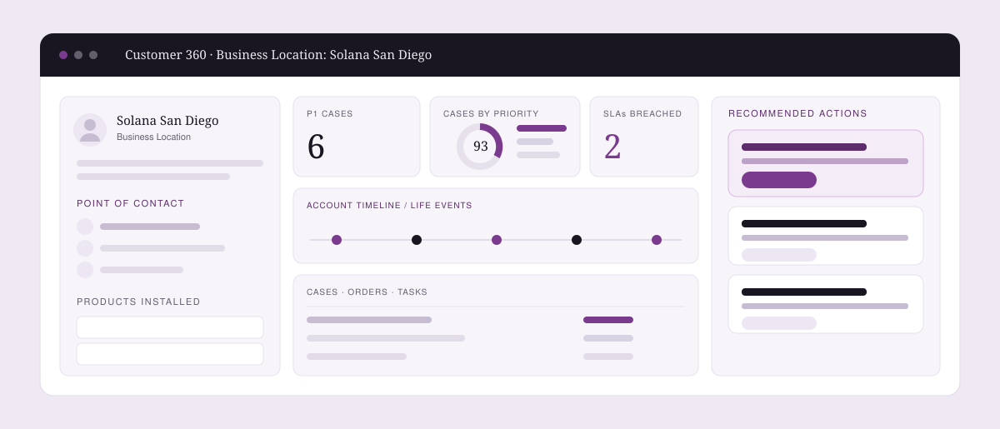
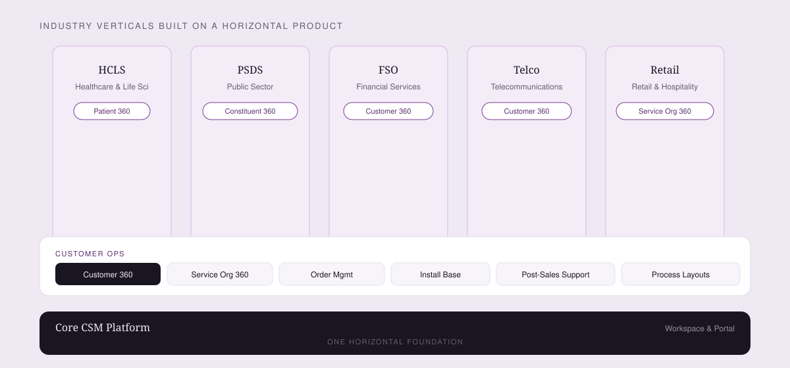
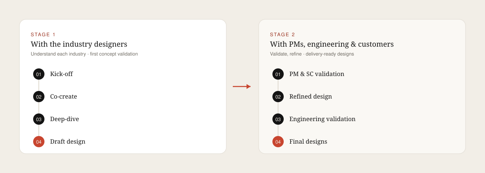
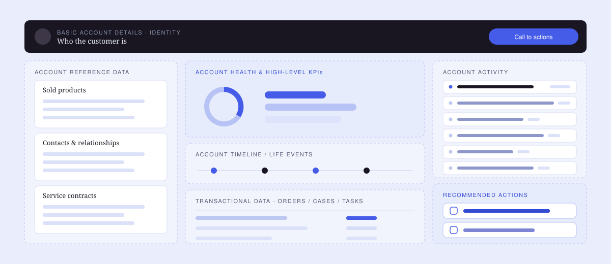
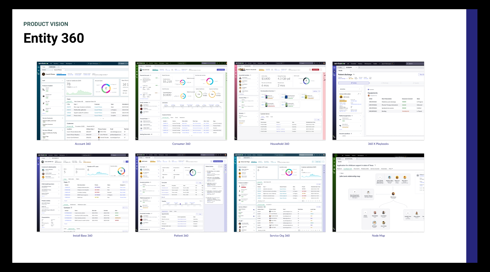
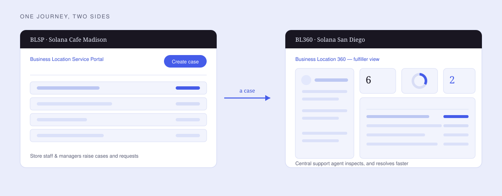
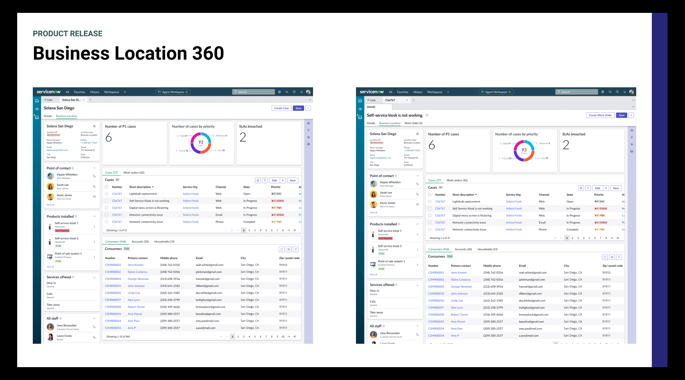

ServiceNow · CSM Customer Ops · 2022
Customer 360: one view of the customer, across every industry.
A foundational ServiceNow surface that visualizes a customer and everything around them — products, services, relationships, and insights. I owned it end to end, told through three lenses: facilitation, vision, and release.

Diagrams on this page are clean re-creations of the ServiceNow concepts in the site's visual language; a few source screens from the deck are shown as-is to convey the real product's breadth.
The three lenses
One project, told three ways.
Facilitation
A two-stage co-creation program across industry designers, PMs, and engineering to build one horizontal product.
Vision
Entity 360 — an ideal, plausible north star validated with stakeholders and real customers.
Release
Shipping the first product, Business Location 360, within the platform's real capabilities.
The context
A foundation many industries would build on.
Customer 360 is part of a larger effort called Entity 360 — a family that includes Business Location 360, Account 360, Customer 360, and Household 360. CSM Customer Ops sits horizontally on the Core CSM Platform and powers vertical industry solutions. I was brought in as the only design partner to own the product: create and validate the concepts, ship the MVP with engineering, and drive the roadmap with north-star vision.

Who it serves
Many industries, a handful of personas.
Financial Services
Account 360, branch support — relationship managers, bank branches, brokerage & agency.
Government
Constituent 360, (inter)agency support — state and county agencies.
Healthcare
Patient 360, hospital support — healthcare workers, clinics, pharmacies, labs.
Retail & Hospitality
Customer 360, store support — franchises, real estate, automotive dealerships.
Education
Student 360, campus support — universities, colleges, departments.
+ Telco & more
The same template stretched to each vertical's data density and priorities.
The framing
How might we enable customer-facing personas to…
…deliver the best customer experience throughout the business lifecycle — Purchase, Onboarding, Usage, and Post-Sales. Three goals anchored every concept.
Access seamlessly
See customer information in one place as they go about providing support — no tab-hopping.
Decide with reality
Make informed decisions from information that reflects the reality on the ground.
Act on it
Use customer visualisations to initiate workflows — both proactive and reactive.
Lens 01 · Facilitation
A horizontal product is built in a room, not a silo.
To validate the concepts and find the patterns common across industries, I ran a two-stage co-creation program as the facilitator — starting with the industry designers, then widening to PMs, engineering leads, and customers.

Kick-off
Build the relationship, set objectives, and walk everyone through the co-creation process.
Co-create
Participants share their industry, use-cases & personas; we showcase the 360 and enrich it together.
Deep-dive
Detail and define the final industry-specific template — down to the special widgets.
What the sessions taught me
Industry priorities
Verticals have different focus; uptake roadmaps are complex and long-term.
Scalability
Different use-cases mean the solution must scale both up and down.
Unique needs
Each industry has unique problems that require unique solutions.
Awareness & support
Create awareness that a 360 exists — and support verticals while they adopt it.
Lens 02 · Vision
Entity 360: an ideal you can actually ship.
As product partner I drove the vision: create an ideal, plausible concept, validate it with stakeholders, then shape a north star that could be released within a few releases — scalable and flexible enough to hold patterns across every industry. The key move was a reusable “carve-up”: a consistent anatomy of regions that any vertical could adapt.

The vision applied across entity types

Validated with real customers
“You are going in the right direction. It meets my expectations quite well.”
Customer validation session
“It will help customer-focus teams and business roles drive proactive growth conversations.”
Customer validation session
B2B leads
B2B is the most prominent relationship, then B2C and B2B2C.
Density varies
Info density differs by industry — so components expand, collapse & search.
Activity on the right
Account activity belongs in the right contextual panel as second-level detail.
Persona layouts
Persona-based layouts and re-orderable components proved very useful.
Lens 03 · Release
Business Location 360, shipped.
The vision earned the right to ship. I created the release-specific, high-fidelity designs for Business Location 360 — the first product of the Entity 360 family — buildable within ServiceNow's Agent Workspace, working flows → pages → components with engineering. As the solo designer owning the product, I often played part product manager to drive it.

Before / after
From scattered tabs to one context-aware view.
Customer info split across related tabs — multiple clicks and context-switching. No visual sense of relationships, hierarchy, or journey; case and customer were two separate monolithic entities.
One 360 view: identity, KPIs, cases, consumers, and activity in context — a scalable layout that handles complex Service Orgs and Location Accounts, not just individuals.

Outcome
What the three lenses added up to.
A product, shipped
Business Location 360 released as the first concrete step of the Entity 360 vision.
A validated north star
A full Entity 360 library — Account, Consumer, Household, Patient, Service Org & more — confirmed by real customers.
A repeatable process
A cross-industry co-creation method and a template system others could keep building on.
Closing
What I’d carry forward.
Facilitate the pattern
A horizontal product only works if every vertical helps shape it — so I made co-creation the method.
Vision must be buildable
An ideal earns its keep when it’s scalable, flexible, and shippable within a few releases.
Own it to ship it
As the sole designer I drove the release end to end — part designer, part product manager.
Keep exploring